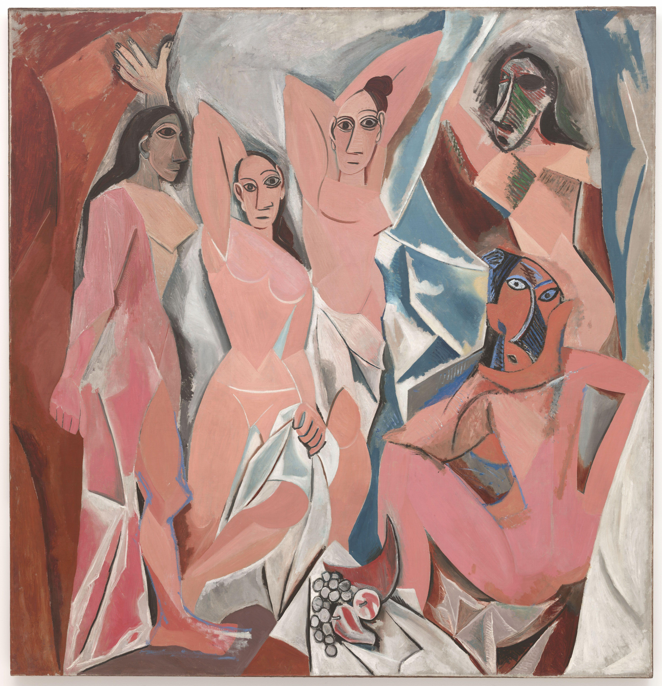
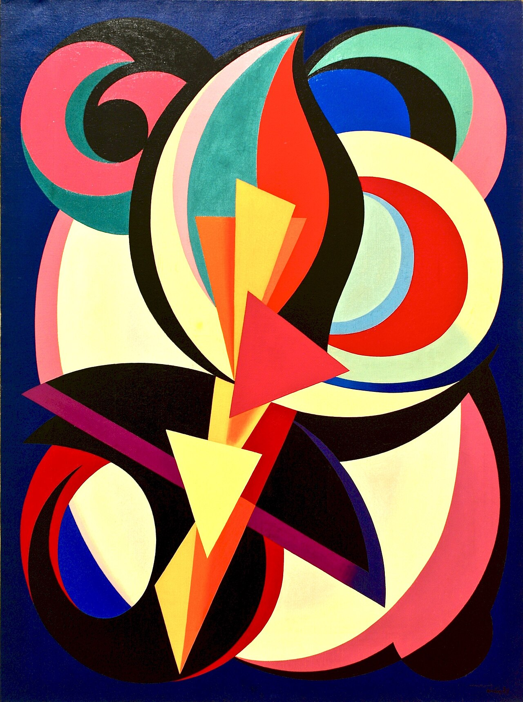
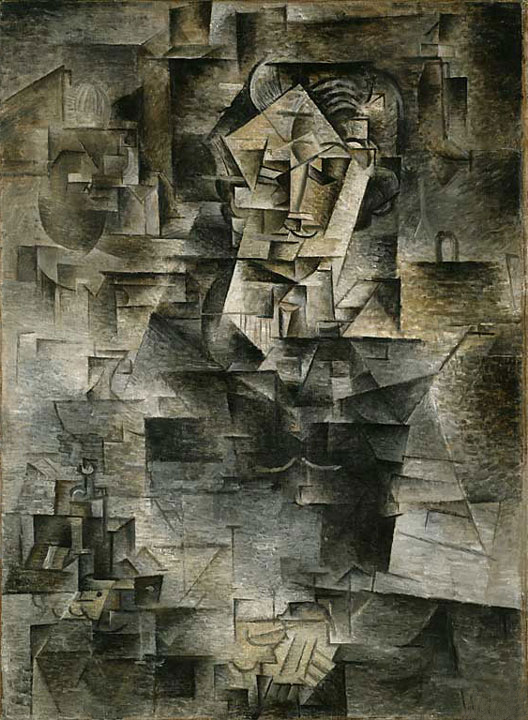
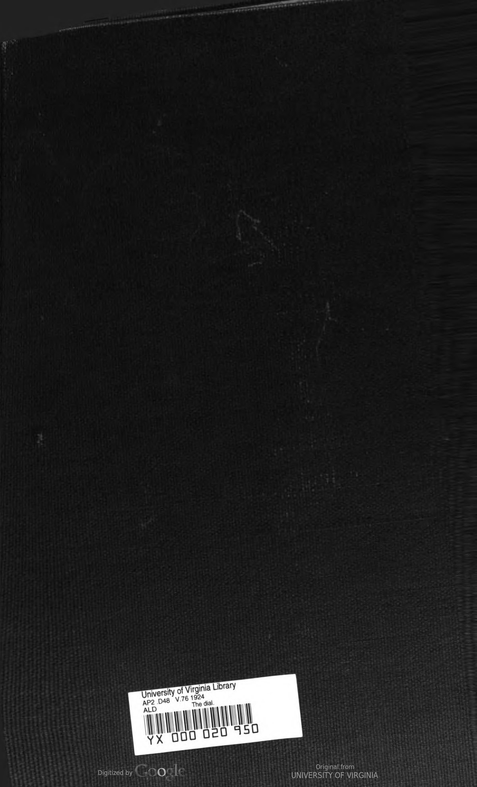
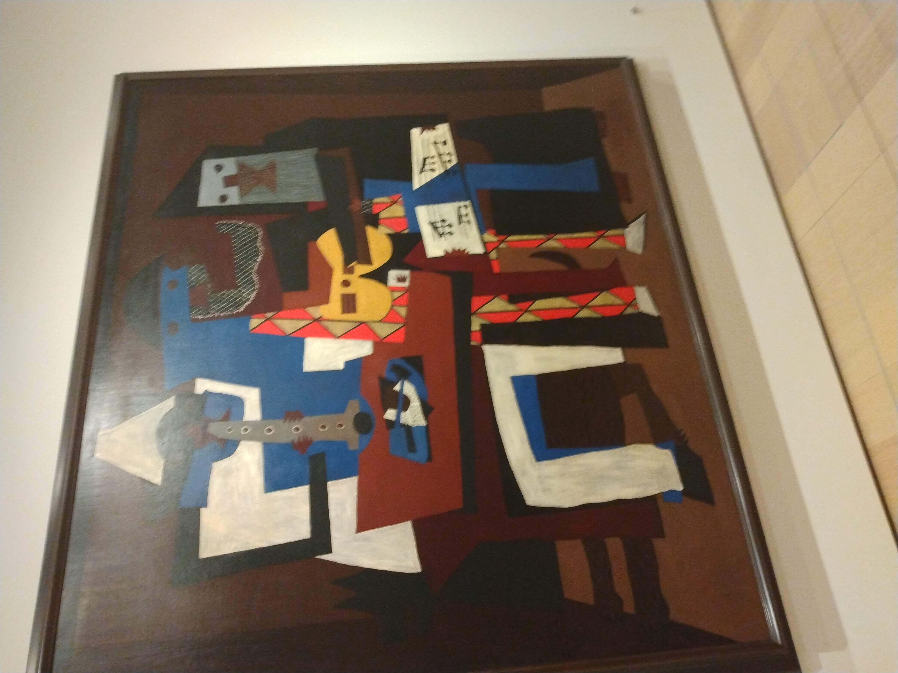
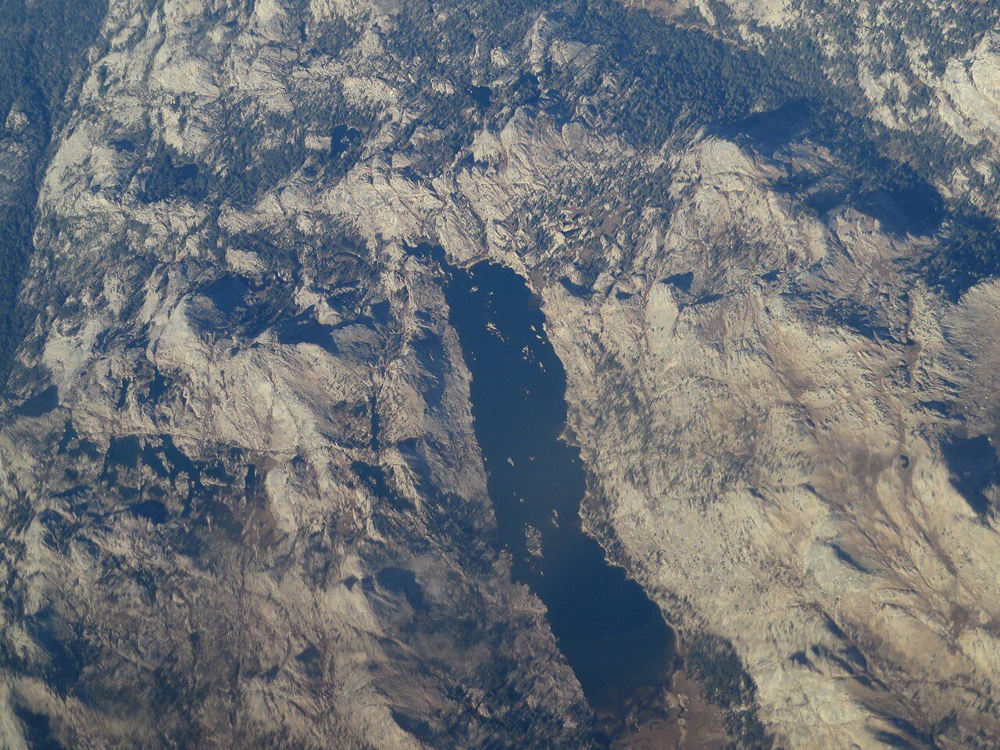
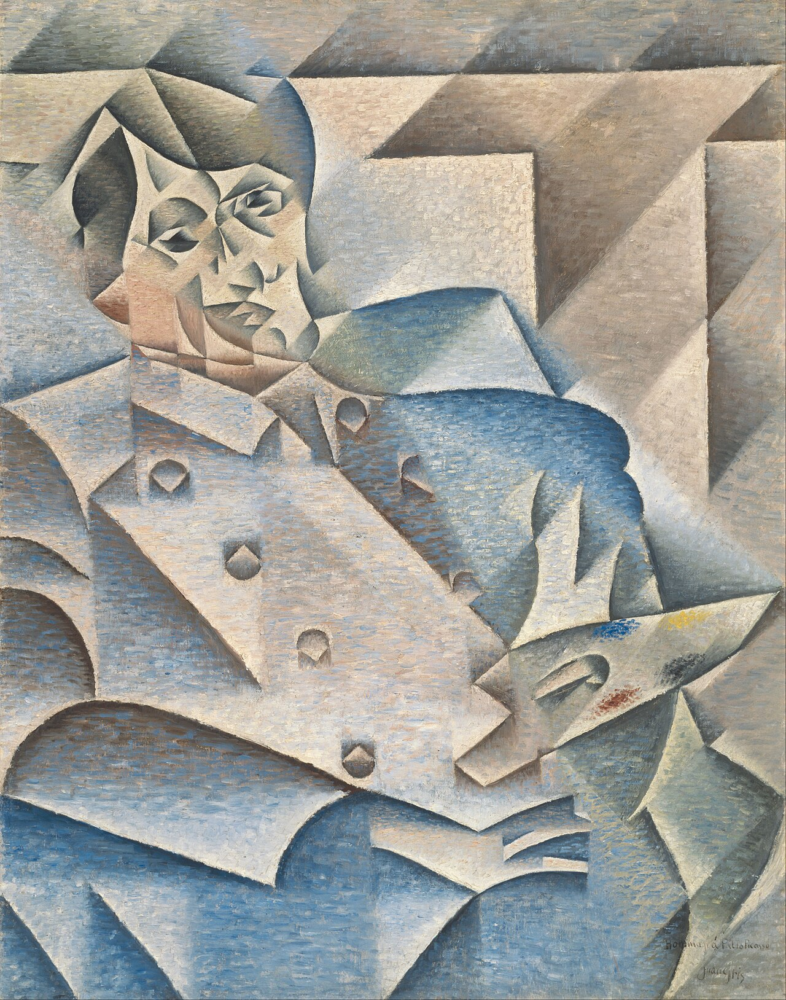
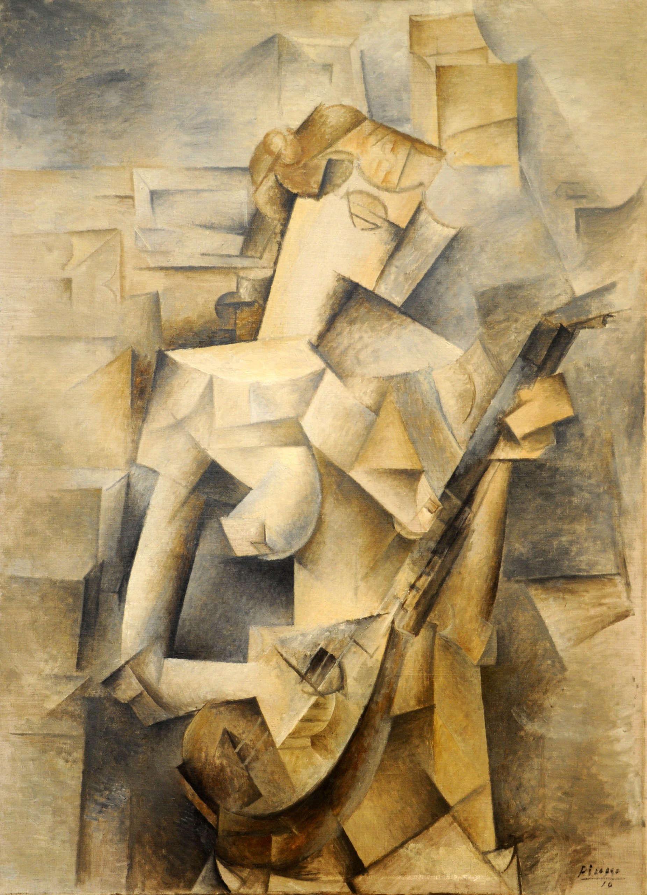

Meesterwerk: Les Demoiselles d'Avignon
Pablo Picasso, 1907

⚜️ UITGEBREIDE STIJLFIGUREN
📐 GEOMETRISCHE FRAGMENTATIE
Alles is vlak: Objecten worden opgebroken in geometrische vormen - kubussen, cilinders, kegels, vlakken. Het ronde wordt hoekig, het organische wordt mechanisch.
Meervoudig perspectief: Je ziet het object van voren én van opzij tegelijk. De neus kan profiel zijn terwijl de ogen frontaal kijken. Tijd en ruimte worden samengeperst.
🔗 Tijdsgeest Connecties
Psychologie: Bergson's "durée" - het bewustzijn ervaart de wereld als flux van fragmenten, niet als statisch beeld
Politiek: Koloniale wereldverovering breekt traditionele grenzen op - net als kubisme traditioneel perspectief doorbreekt
Filosofie: Einsteins relativiteitstheorie - geen absoluut standpunt, alle perspectieven zijn even legitiem
Historie: Röntgenstralen tonen het innerlijk van objecten - kubisme toont meerdere kanten tegelijk
🎨 ANALYTISCH vs SYNTHETISCH
Analytisch (1909-1912): Monochroom (bruin, grijs), objecten worden geanalyseerd tot hun essentiële vormen. Bijna abstract - soms is het onderwerp nauwelijks herkenbaar.
Synthetisch (1912-1914): Kleur keert terug, vormen worden eenvoudiger, herkenbaarder. Collage wordt belangrijk - echte materialen (kranten, behang) worden geplakt.
🔗 Tijdsgeest Connecties
Psychologie: Freud's analyse van het onderbewuste - net zoals het analytische kubisme de vorm analyseert tot de essentie
Politiek: De wetenschappelijke benadering weerspiegelt het moderne vertrouwen in analyse en systeem
Filosofie: Het reductionisme van de moderne wetenschap - terug naar fundamentele bouwstenen
Historie: De industriële analyse van productieprocessen - systematisch ontleden en heropbouwen
📰 COLLAGE & PAPIER COLLÉ
Gemengde media: Picasso plakt echte kranten, behang, touw op het doek. Dit ondermijnt de "zuiverheid" van de schilderkunst - alles mag.
Werkelijkheid + Illusie: Het echte materiaal (bijv. een stuk krant) contrasteert met het geschilderde. Wat is echt, wat is afbeelding?
🔗 Tijdsgeest Connecties
Psychologie: De collage als droomlogica - onverwachte elementen bij elkaar gebracht zoals in het onderbewuste
Politiek: Kranten brengen de politieke actualiteit het atelier in - de wereld van buiten dringt binnen
Filosofie: Het in vraag stellen van "echt" versus "namaak" - de waarheid als construct
Historie: Massadrukwerk en consumentencultuur worden onderdeel van de kunst - voorbode van de moderne samenleving
🌍 PRIMITIVISME & ANDERE CULTUREN
Maskers: Afrikaanse en Oceanische maskers inspireren Picasso. Het primitieve wordt modern - de "wilde" heeft iets te leren de "beschaafde".
Platheid: Net als in Egyptische of Japanse kunst: geen westerse diepte, maar een plat vlak. Het doek is een oppervlak, geen raam.
🔗 Tijdsgeest Connecties
Psychologie: Het primitieve als bron van authentieke driften - terug naar een ongerept onderbewuste
Politiek: Kolonialisme maakt Afrikaanse kunst toegankelijk - hoewel geplunderd, wordt het nu geïnspireerd
Filosofie: Nietzsche's kritiek op westerse beschaving - het "primitieve" als ethisch alternatief
Historie: De "ontdekking" van niet-westerse kunst door het Westen - een complexe culturele uitwisseling
🔗 TIJDSGEEST CONTEXT (1907-1914)
🏛️ POLITIEK PERSPECTIEF: De Belle Époque nadert haar einde. Spanningen tussen Europese grootmachten groeien - de Entente Cordiale (1904) en de Triple Entente vormen tegenover elkaar staande blokken. De Marokko-crisissen (1905, 1911) brengen Europa aan de rand van oorlog. Kolonialisme is op zijn hoogtepunt: Frankrijk en België exploiteren Afrika, Picasso wordt geïnspireerd door Afrikaanse maskers uit de koloniën. De Eerste Wereldoorlog (1914) zal alles veranderen. Het kubisme wordt gezien als "ontaard" door nationalistische critici.
📚 LITERAIR PERSPECTIEF: Modernisme in de literatuur: Proust's "Du côté de chez Swann" (1913) met stream of consciousness, Joyce's fragmentarische stijl in "Dubliners" (1914). Apollinaire's "Alcools" (1913) introduceert visuele poëzie en noemt het kubisme "purisme". Het woord wordt beeld - parallel aan het breken van het beeld in de kunst. Gertrude Stein experimenteert met taal in Parijs.
🧠 PSYCHOLOGISCH PERSPECTIEF: Bergson's filosofie van de "durée" (1907) - tijd als ervaring, niet als klok. Het bewustzijn als stroom van fragmenten. Freud's psychoanalyse raakt bekend in Parijs; het onderbewuste als bron van creativiteit. De mens ervaart de wereld niet als een camera maar als een flux van indrukken - precies wat kubisten schilderen.
⚙️ HISTORISCH PERSPECTIEF: Einstein's relativiteitstheorieën (1905, 1915) tonen dat ruimte en tijd relatief zijn - net als kubistisch perspectief. Röntgenstralen (ontdekt 1895) tonen het innerlijk van het lichaam - parallel aan het tonen van meerdere kanten. Auto's (Ford Model T, 1908), vliegtuigen (Wright Brothers, 1903), cinematografie veranderen perceptie van ruimte en tijd. De industriële revolutie maakt machines tot metafoor voor moderniteit.
🎭 FILOSOFISCH PERSPECTIEF: Einsteins relativiteit: er is geen absoluut standpunt. Nietzsche's perspectivisme (elk standpunt is legitiem) wordt breed gelezen. Henri Poincaré's conventionisme: waarheid is een overeenkomst, niet een absolute realiteit. Het kubisme schildert hoe we werkelijk ervaren - meervoudig, gefragmenteerd, relatief - niet hoe de camera registreert.
🎨 TIEN MEESTERWERKEN - GEDETAILLEERDE ANALYSE
1. "Les Demoiselles d'Avignon" (1907) — Pablo Picasso
Museum of Modern Art, New York · 244 × 234 cm · Olieverf op doek
Achtergrond: Vijf prostituees in een bordeel in Barcelona (Carrer d'Avinyó). Picasso's doorbraak naar het modernisme. De titel is later bedacht door een vriend - Picasso noemde het "Het Bordeel van Avignon". Dit is het begin van het Kubisme.
🔍 STIJLANALYSE
Maskers: De twee figuren rechts hebben Afrikaanse maskers. Picasso bezocht het Trocadéro museum in Parijs en was gefascineerd door "primitieve" kunst. Dit is geen exotisme maar een zoektocht naar essentie.
Geometrische lichamen: Borsten zijn kegels, benen zijn cilinders, gezichten zijn diamanten. Het vrouwelijke lichaam wordt opgebroken in hoekige facetten. Schoonheid is niet meer rond maar scherp.
Meervoudig perspectief: De neus kan profiel zijn terwijl de ogen frontaal kijken. Je ziet meerdere kanten tegelijk. Dit is niet "vervorming" maar "meer waarheid" - zo zien we de werkelijkheid in tijd.
Angst: De figuren zijn niet uitnodigend maar bedreigend. De maskers zijn agressief. Dit is geen prettig bordeel maar een angstdroom van seksualiteit.
Begin van Kubisme: Picasso's vrienden (Braque, Derain) waren geschokt. Matisse noemde het "De demoiselles d'Avignon" als spot. Maar het veranderde alles - de weg naar abstractie begint hier.
2. "Stilleven met Viool en Kan" (1910) — Georges Braque
Analytisch Kubisme · Alternatief werk, vergelijkbare periode

Achtergrond: Een typisch stilleven van het Analytische Kubisme. Braque en Picasso werkten in deze periode zo nauw samen dat hun werken bijna niet te onderscheiden zijn. Het stilleven - het meest traditionele onderwerp - wordt radicaal vernieuwd.
🔍 STIJLANALYSE
Analytisch Kubisme: Het object (viool, fles, tafel) is opgebroken in facetten. Je ziet meerdere kanten tegelijk. Het is bijna abstract - alleen de getrainde kijker herkent de objecten.
Monochroom: Bruin, grijs, beige - de kleur is eruit geanalyseerd. Alles dient de vorm. Het is als een tekening in olieverf, niet een schilderij in kleur.
Platheid: Geen diepte, geen perspectief. Het doek is een plat vlak. Maar toch suggereren de facetten een driedimensionaal object. Het is een paradox: plat én diep.
Samenwerking: Braque en Picasso werkten dagelijks samen. Ze spraken af: "Laten we geen ronde vormen meer schilderen." Dit was een revolutie per afspraak.
3. "Portret van Daniel-Henry Kahnweiler" (1910) — Pablo Picasso
Art Institute of Chicago · 100 × 73 cm · Olieverf op doek

Achtergrond: Kahnweiler was Picasso's kunsthandelaar - en zijn meest loyale supporter. Hij kocht alles wat Picasso en Braque maakten. Dit portret toont hem als een man van cultuur én als een verzamelaar van facetten.
🔍 STIJLANALYSE
Portret zonder gezicht: Je ziet Kahnweiler's ogen, neus, mond - maar verdeeld over het doek. Het is een psychologisch portret, niet een fysiek. We zien zijn "essentie" verspreid in ruimte.
Meervoudig perspectief: Het gezicht wordt gezien van voren én van opzij. De tijd is samengeperst - alsof je om de persoon heen loopt terwijl je kijkt.
Monochroom: Grijs, bruin, beige. De kleur zou afleiden van de vormanalyse. Dit is wetenschap: de mens opgebroken in componenten.
Compositie: De figuur is centraal maar gefragmenteerd. De achtergrond en de voorgrond vloeien in elkaar. Er is geen "achter" meer - alleen vlakken.
4. "Stilleven met Rieten Stoelzitting" (1912) — Pablo Picasso
Musée Picasso, Parijs · 29 × 37 cm · Olieverf en oliedoek op doek

Achtergrond: Het eerste echte collage in de kunstgeschiedenis. Picasso plakt een stuk echt rieten stoelzitting (oliedoek) op het doek, en schildert er omheen. Het begin van het Synthetische Kubisme.
🔍 STIJLANALYSE
Collage: Echt materiaal (riet) naast geschilderd materiaal. Wat is waar? De rieten zitting is "echter" dan de geschilderde stukken, maar het is allemaal op een vlak. Dit ondermijnt de schilderkunst zelf.
Letters en cijfers: "JOU" en deel van een wijnfles zijn geschilderd. Het gebruik van letters (die betekenis hebben maar ook vorm zijn) is typisch Kubistisch.
Synthetisch Kubisme: Kleur keert terug, vormen worden eenvoudiger. We herkennen weer een glas, een pijp, een citroen. Maar ze zijn plat, decoratief, niet "echt".
Revolutie: Vóór dit moment was schilderen "namaak". Nu is schilderen "constructie". Kunstenaars mogen alles gebruiken - verf, lijm, krant, touw.
5. "Man met een Gitaar" (1911-1912) — Georges Braque
Museum of Modern Art, New York · 116 × 81 cm · Olieverf op doek

Achtergrond: Een typisch werk uit het hoogtepunt van het Analytische Kubisme. Een gitaarspeler in een café - een traditioneel onderwerp dat volledig wordt geherdefinieerd. Het is bijna abstract; alleen de kenner ziet de gitaar en de mens.
🔍 STIJLANALYSE
Fragmentatie: De gitaar is opgebroken in facetten. Je ziet de hals, de klankkast, de snaren - maar verspreid over het doek. Het is alsof je door een verbrokkeld raam kijkt.
Monochroom: Oker, bruin, grijs. De kleur is teruggebracht tot de essentie. Dit is geen feestelijk café maar een ernstige analyse van vorm.
Platheid: Geen diepte. De figuur en de achtergrond zijn één. Maar toch suggereren de lijnen een ruimte - het is een puzzel die je moet oplossen.
Muziek als structuur: Braque was zelf muzikant. De gitaar is niet alleen een object maar een metafoor voor compositie - noten, maat, harmonie vertaald in vorm.
6. "Drie Muzikanten" (1921) — Pablo Picasso
Museum of Modern Art, New York · 201 × 223 cm · Olieverf op doek

Achtergrond: Geschilderd in Fontainebleau, tijdens Picasso's zomer daar. Het toont drie figuren uit de Commedia dell'arte: Harlekijn (links), een monnik (midden), en Pierrot (rechts). Het is Synthetisch Kubisme - groot, kleurrijk, decoratief.
🔍 STIJLANALYSE
Synthetisch Kubisme: Kleur keert terug - fel geel, blauw, bruin. De vormen zijn eenvoudiger, herkenbaarder. We zien duidelijk drie figuren. Maar ze zijn nog steeds geometrisch, plat, kubistisch.
Commedia dell'arte: Harlekijn (de gele figuur met de ruitjes), de monnik (bruin, met een halsdoek), Pierrot (wit, de melancholieke clown). Picasso identificeerde zich met Harlekijn - de kunstenaar als nar.
Compositie: De drie figuren vormen een eenheid. Ze zitten dicht bij elkaar, muziek maken samen. Maar elke figuur is ook een apart vlak - een puzzelstuk in het grotere geheel.
Neo-classicisme: Dit werk staat op de grens van Kubisme en Picasso's latere "klassieke" periode. De figuren zijn monumentaal, bijna sculpturaal. Het is Kubisme dat naar de Renaissance kijkt.
7. "De Portugees" (1911) — Georges Braque
Kunstmuseum Basel · 117 × 82 cm · Olieverf op doek

Achtergrond: Een portret van een gitarist in een Marseillaanse bar. De titel verwijst naar de Portugese gemeenschap in Marseille. Het is een hoogtepunt van het Analytische Kubisme - bijna abstract, maar met herkenbare elementen.
🔍 STIJLANALYSE
Letters en cijfers: "BAL" en cijfers zijn geschilderd. Dit is typisch Kubistisch - letters hebben betekenis maar ook vorm. Ze zijn tegelijkertijd communicatie en decoratie.
Extreme fragmentatie: De figuur is bijna niet te herkennen als mens. Je ziet facetten, vlakken, lijnen. Het is alsof de mens is opgelost in geometrie.
Monochroom: Bruin, grijs, beige. De kleur is volledig geëlimineerd. Dit is analyse puur - de kleur zou afleiden van de vorm.
Diepte: Er zijn suggesties van diepte (diagonale lijnen die weglopen), maar het blijft plat. Het is een tweedimensionaal beeld van een driedimensionale wereld.
8. "Portret van Pablo Picasso" (1912) — Juan Gris
Art Institute of Chicago · 93 × 74 cm · Olieverf op doek

Achtergrond: Juan Gris' portret van zijn vriend en mentor Picasso. Gris was de derde man van het Kubisme (na Picasso en Braque). Zijn stijl is strakker, meer geometrisch, bijna wetenschappelijk.
🔍 STIJLANALYSE
Gris' stijl: Strakker, meer geordend dan Picasso. De vlakken zijn duidelijker, de lijnen zijn preciezer. Gris was een tekenaar voor hij schilder werd - dat zie je.
Collage-elementen: Stukken behang, krant, gekleurde papieren. Gris was een meester van het papier collé. Het echte materiaal contrasteert met het geschilderde.
Herkenbaarheid: Dit is duidelijk een portret - je ziet Picasso's profiel, zijn hoge voorhoofd, zijn intense blik. Maar het is opgebroken in facetten.
Kleur: Gris gebruikt meer kleur dan Picasso in deze periode. Blauw, bruin, beige - ingetogen maar aanwezig. Het is eleganter, minder ruw.
9. "Naakt dat een Trap afdaalt, Nr. 2" (1912) — Marcel Duchamp
Philadelphia Museum of Art · 148 × 89 cm · Olieverf op doek

Achtergrond: Duchamp's meest bekende schilderij. Een figuur die een trap afdaalt, opgebroken in sequenties van beweging. Geïnspireerd door chronofotografie (Muybridge). Het veroorzaakte een schandaal op de Armory Show in New York (1913).
🔍 STIJLANALYSE
Beweging in tijd: Net zoals een fototoestel met lange sluitertijd beweging vastlegt als strepen, zo toont Duchamp de figuur op meerdere plekken tegelijk. Het is "dynamische" kunst.
Mechanisch: De figuur lijkt een machine - een cyborg, een robot. Het is bijna niet menselijk. Duchamp was gefascineerd door technologie en de "einde van de mens".
Bruin monochrome: De kleur is ingetogen - bruin, beige, oker. Dit is geen vrolijk schilderij maar een ernstige studie van beweging.
Invloed: Dit werk maakte het Amerikaanse publiek woedend. "Een botsing tussen een houtzagerij en een explosief pakhuis," schreef een criticus. Maar het was ook een succes - het toonde dat Europa modern was.
10. "Vrouw met een Mandoline" (1909) — Pablo Picasso
Tate Modern, Londen · 92 × 73 cm · Olieverf op doek

Achtergrond: Een vroeg Kubistisch werk, nog in de overgangsfase. De vrouw is herkenbaar, de mandoline is herkenbaar - maar beide zijn al opgebroken in facetten. Dit is Picasso op weg naar het volledige Kubisme.
🔍 STIJLANALYSE
Overgangsfase: Dit is nog geen volledig Kubisme. De figuur is herkenbaar, de ruimte heeft nog diepte. Maar de beginselen zijn er: fragmentatie, meervoudig perspectief, geometrisering.
De mandoline: Het instrument is een ronde vorm die wordt opgebroken in hoeken. Het is metafoor: muziek (rond, vloeiend) wordt visueel (hoekig, statisch).
Kleur: Oker, bruin, grijs - maar met vleugjes roze en blauw. Nog niet het extreme monochrome van 1910-1912, maar al onderweg.
Cézanne: Dit werk staat in de traditie van Cézanne, die Picasso als "de vader van ons allen" beschouwde. Cézanne's geometrische natuur wordt hier systematisch toegepast.
📚 CONCLUSIE: DE WERELD OPGESLOVEN IN VLAKKEN
Het Kubisme leert ons:
- Dat perspectief een keuze is: We hoeven niet één kant te kiezen - we kunnen alle kanten tegelijk zien
- Dat kunst materiaal is: Verf, doek, lijm, krant - alles mag
- Dat "primitief" modern is: Afrikaanse maskers zijn niet achterlijk maar vooruitstrevend
- Dat abstractie begint met analyse: Je moet eerst weten wat iets IS voordat je het kunt vervormen
- Dat de wereld fragmentarisch is: Na WOI (die net begon toen het Kubisme eindigde) leek de wereld inderdaad gebroken
Picasso en Braque braken de wereld - zodat we hem opnieuw konden zien.